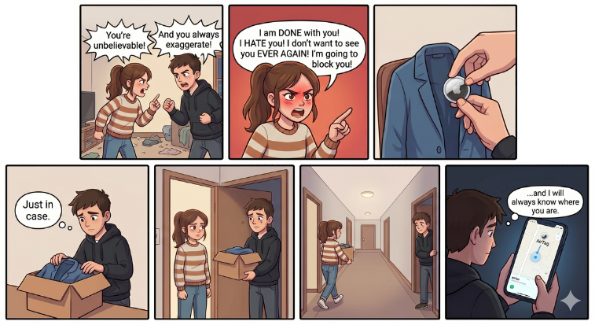
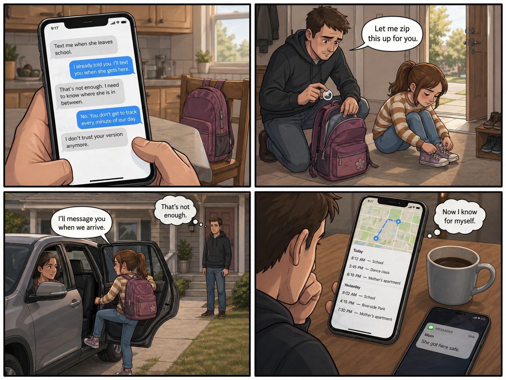
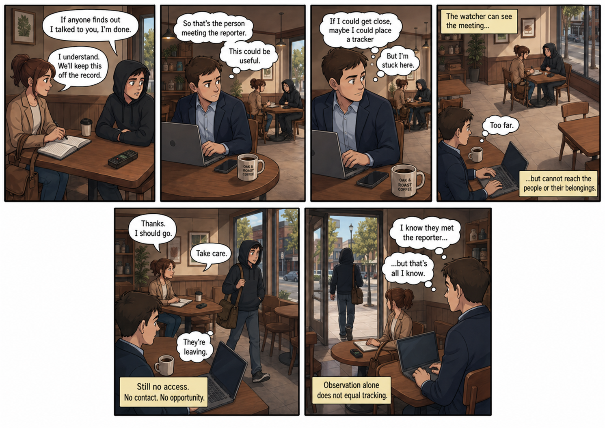

Apple AirTag

Scenario-based misuse analysis
Most analyses ask what a product does. Scenario-based analysis asks who's around it. You imagine real situations — people, tensions, relationships — and check whether the product changes what's possible in those situations. Misuse rarely shows up in the spec sheet. It shows up in the scenario.
When all three line up, a product becomes a misuse vector.
Pick a scenario to investigate
Three situations. Which would you investigate first for possible misuse?



That was scenario-based misuse analysis.
You watched a situation and checked it against the same lens. When you're designing a new product — or evaluating one — don't start with the features. Start with the people around it, and ask: motive, access, opportunity. If all three line up somewhere, you've found a misuse vector before it finds you.